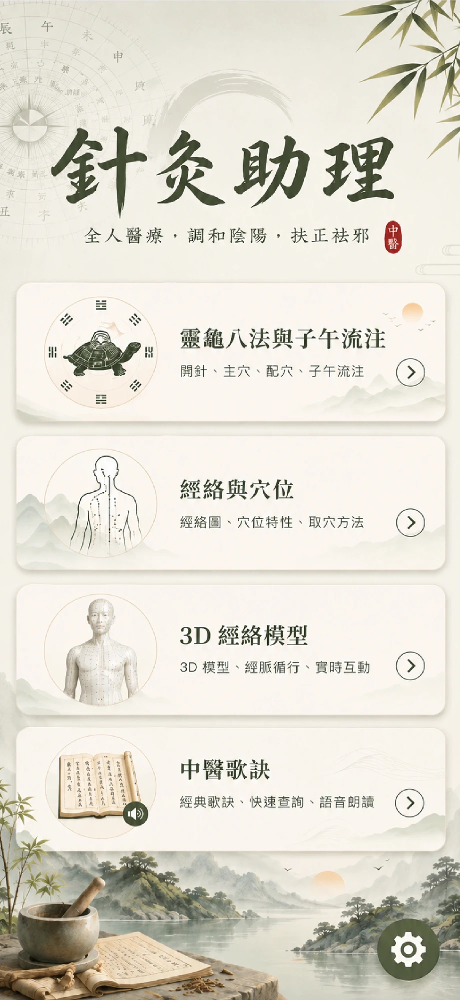

顯示
語音
關於
免責聲明
⚕ 本 App 不提供醫療建議，亦非醫療行為
本應用程式（含穴位圖、治症描述及 AI 生成內容）僅供中醫／針灸教學、學術探討及知識參考之用。嚴禁使用者依據本 App 內容進行自我或他人之針灸、按壓、放血或其他侵入性治療。
若您身體不適或有疾病，請立即尋求合格之中醫師或西醫師診治。延誤就醫或自行針灸可能導致健康風險。
免責條款
使用者責任條款
您明確同意：使用本 App 所產生之任何知識理解，均不可取代醫師親診。若您因參考本 App 內容而自行針灸、請他人施針、停藥或延遲就醫，所衍生之直接或間接傷害、法律責任，本 App 開發者、資料提供者概不負責。